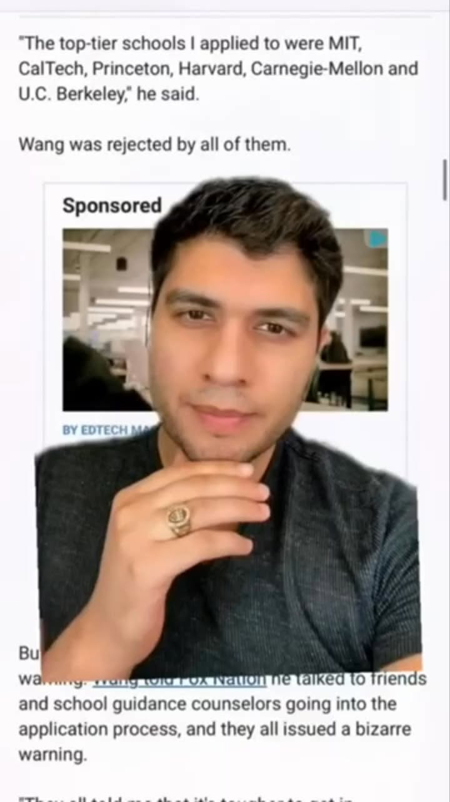

《看懂制度，選對世界》第一集
另類種族歧視？亞裔學生在美國進不了一流大學
另類 種族歧視 : 亞裔學生 在美國進不了一流大學?

另類 種族歧視 : 亞裔學生 在美國進不了一流大學?
【另類 : 在美國進不了一流大學?】 一場關於名校、政治、招生與校園價值的戰爭 DEI 是 Diversity, Equity, Inclusion，中文常翻成「多元、公平、包容」。原本它是美國大學用來支持不同背景學生的校園政策，包含第一代大學生、低收入家庭、國際學生、少數族裔、身障學生、女性、退伍軍人等族群。但到了 2026 年，DEI 已經成為美國高等教育最敏感的議題之一。它影響的不只是校園文化，也牽動招生政策、教授聘任、聯邦補助、大學排名形象，甚至美國政治兩黨之間的文化戰爭。【DEI 到底是什麼？
】 簡單來說，DEI 有三層意思。Diversity 多元 代表大學希望學生、教授、職員的背景更多元，包括不同種族、國籍、宗教、性別、社經背景與人生經驗。Equity 公平機會 重點是讓不同起點的學生，都能取得足夠資源，例如學業輔導、獎助學金、心理支持、寫作中心、第一代大學生支持。Inclusion 包容 重點是讓學生在校園中有歸屬感，減少歧視、霸凌、排斥與孤立。對許多美國大學來說，DEI 曾經是校園進步價值的象徵。但近年它也被批評為政治正確、行政膨脹，甚至有人認為 DEI 可能影響錄取與聘任公平。
【為什麼 DEI 會突然變成美國大學的風暴中心？】 2023 年美國最高法院對 Harvard 與 UNC 招生案的判決。最高法院裁定，Harvard 與 UNC 的 race-conscious admissions，也就是把種族因素納入招生考量的做法，違反憲法平等保護原則。這個判決使美國大學過去長期使用的 affirmative action 招生制度受到重大限制。判決後，美國大學仍可以閱讀學生的個人故事，但不能把「種族身分本身」當成錄取因素。
換句話說，學生可以在申請文書中談家庭背景、成長經驗、文化衝擊、社會行動，但大學必須評估的是學生展現出的能力、品格、行動與貢獻，而不是單純的族群標籤。【哪些美國大學仍有 DEI 或 Belonging 架構？】 現在很多學校已經減少直接使用 DEI 這三個字，改成 Belonging、Community、Inclusion、Student Success、Institutional Equity、Civil Rights 等名稱。這不是單純換名字，而是因為學校要在政治壓力、法律風險與校園支持之間取得平衡。
例如 Harvard 已把原本的 Office of Equity, Diversity, Inclusion, and Belonging 改名為 Community and Campus Life，這代表頂尖私校正在重新包裝 DEI 語言，以降低政治風險。Yale 則推動過 Belonging at Yale 五年計畫，主軸是提升 diversity、equity 與 inclusion，並於 2024–2025 學年結束時完成這個五年計畫。
University of California 系統仍公開強調 equity, diversity and inclusion，官方網站也指出 UC 十個校區、三個國家實驗室與農業自然資源部門，都需把 EDI 融入大學生活。Columbia 則使用 Inclusion and Belonging 的語言，並設有 Office of Institutional Equity，處理歧視、騷擾、Title VI、Title VII、Title IX 等相關申訴。
這些例子說明一件事： DEI 沒有完全消失，而是正在改名、重組、轉向合規化。同樣是美國大學，東岸私校、加州公校、德州公校、佛州公校、南方州立大學，政策氣候可能完全不同。未來選校時，除了排名，也要看： 校園文化 州政府政策 國際學生支持 教授與學生組成 言論自由氣氛 就業與實習資源 學校是否正在被政治壓力影響 這些都會影響學生四年的學習體驗。